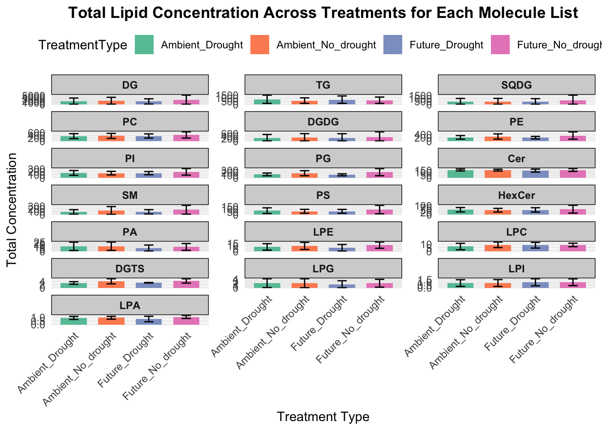

library(dplyr)
library(readxl)
library(writexl)
library(openxlsx)
library(tidyverse)
library(pheatmap)
library(viridis)
library(ggplot2)
library(scales)
# Load the Excel file
file_path <- "ESTD-ALL-POS-NEG-CAL.xlsx"
df_std_cal <- read_excel(file_path, sheet = "Sheet1")
calculate_calibration_parameters <- function(row) {
concentrations <- c(0)
areas <- c(0)
initial_concentration <- row[["Initial concentration"]]
injection_columns <- c(names(row)[grep("^0_0", names(row))],
unlist(lapply(1:7, function(i) paste0(i, "_", c(5, 1)))))
for (col in injection_columns) {
if (grepl("^0_0", col) || !is.na(row[[col]])) {
if (grepl("^0_0", col)) {
effective_concentration <- 0
area <- 0
} else {
volume <- as.numeric(unlist(strsplit(col, "_"))[2])
factor <- 1 / (2 ^ (as.numeric(unlist(strsplit(col, "_"))[1]) - 1))
concentration <- initial_concentration * factor
effective_concentration <- concentration * volume
area <- row[[col]]
}
concentrations <- c(concentrations, effective_concentration)
areas <- c(areas, area)
}
}
data <- data.frame(concentrations = concentrations, areas = areas)
model <- lm(areas ~ concentrations, data = data)
slope <- coef(model)[2]
intercept <- coef(model)[1]
r_squared <- summary(model)$r.squared
non_zero_concentrations <- concentrations[concentrations > 0 & areas > 0]
LOD <- ifelse(length(non_zero_concentrations) > 0, min(non_zero_concentrations), NA)
LOQ <- ifelse(!is.na(LOD), min(concentrations[concentrations >= 3 * LOD & areas > 0]), NA)
if (is.na(LOQ)) {
LOQ <- max(concentrations)
}
return(data.frame(
Slope = slope,
Intercept = intercept,
`LOD (ng)` = LOD,
`LOQ (ng)` = LOQ,
`R²` = r_squared
))
}
calibration_params <- df_std_cal %>%
rowwise() %>%
do(calculate_calibration_parameters(.))
df_std_cal <- bind_cols(df_std_cal, calibration_params)
output_path <- "Fig5-ALL-updated.xlsx"
write_xlsx(df_std_cal, output_path)Figure5
Figure 5: Lipid concentration across different Lipid Classes
Load External standard calibration file for Calibration
Calculate the concentration of the sample with peak area
file_path <- "Fig5-ALL.xlsx"
df_ls_std <- read_excel(file_path, sheet = "LS-SIRIUS-STD")
file_path <- "Fig5-ALL-updated.xlsx"
data <- read_excel(file_path, sheet = "Sheet1")
colnames(data) <- trimws(colnames(data))
df_updated_ls_std_cal <- data %>%
group_by(`Molecule List`, `Precursor Adduct`) %>%
filter(R. == max(R.)) %>%
ungroup()
merged_df <- df_ls_std %>%
left_join(df_updated_ls_std_cal %>% select(`Molecule List`, `Precursor Adduct`, `Slope`, `Intercept`, `LOD..ng.`, `LOQ..ng.`),
by = c("Molecule List", "Precursor Adduct"))
merged_df <- merged_df %>%
mutate(across(starts_with('Sum Total Area'), as.numeric),
Slope = as.numeric(Slope),
Intercept = as.numeric(Intercept))
sum_total_area_cols <- grep("Sum Total Area", names(merged_df), value = TRUE)
merged_df <- merged_df %>%
mutate(across(all_of(sum_total_area_cols),
~as.numeric(ifelse(.x %in% c("#N/A", "N/A", ""), NA, .x))))
concentration_columns <- sum_total_area_cols
for (col in concentration_columns) {
concentration_col <- paste0(col, " Concentration")
merged_df[[concentration_col]] <- (merged_df[[col]] - merged_df[["Intercept"]]) / merged_df[["Slope"]]
above_loq_col <- paste0(concentration_col, " > LOQ")
merged_df[[above_loq_col]] <- merged_df[[concentration_col]] > merged_df[["LOQ..ng."]]
}
write.xlsx(merged_df, "Fig5-ALL-concentration-updated.xlsx", sheetName = "SIRIUS-STD", rowNames = FALSE)Load the metadata to calculate Lipid concentration with treatment
# Load the weight data
df_lipids <- data.frame(
Sample = c(19, 22, 36, 28, 44, 49, 35, 40, 52, 27, 43, 48, 50),
Type1 = c("Ambient", "Ambient", "Ambient", "Ambient", "Ambient", "Ambient", "Future", "Future", "Future", "Future", "Future", "Future", "Future"),
Type2 = c("No_drought", "No_drought", "No_drought", "Drought", "Drought", "Drought", "No_drought", "No_drought", "No_drought", "Drought", "Drought", "Drought", "Drought"),
Weight = c(2.054, 1.965, 2.063, 2.048, 2.063, 2.082, 2.065, 2.032, 2.033, 2.071, 2.028, 2.027, 0.178)
)
# Define the samples
samples <- c(19, 22, 36, 28, 44, 49, 35, 40, 52, 27, 43, 48, 50)
# Now use the samples in the regular expression
concentration_cols <- grep(paste(samples, collapse = "|"), grep('Sum Total Area Concentration', colnames(merged_df), value = TRUE), value = TRUE)
# Extract weights for the samples relevant to the concentration columns
sample_weights <- setNames(df_lipids$Weight[df_lipids$Sample %in% as.numeric(samples)], df_lipids$Sample[df_lipids$Sample %in% as.numeric(samples)])
# Define columns_containing_loq
columns_containing_loq <- grep("> LOQ", colnames(merged_df), value = TRUE)
# Now use the defined columns in the filter function
df <- merged_df %>%
filter(!rowSums(is.na(select(., all_of(columns_containing_loq)))) & # Filter out rows with any NA values in LOQ columns
!rowSums(select(., all_of(columns_containing_loq)) == 0)) %>% # Filter out rows where LOQ columns are zero
select(-all_of(columns_containing_loq)) %>%
select(`Molecule List`, LipidMolecule, any_of(concentration_cols))
df <- df %>%
group_by(`Molecule List`) %>%
summarize(across(any_of(concentration_cols), sum, na.rm = TRUE))
# Exclude columns with "> LOQ" for normalization calculation
concentration_cols <- concentration_cols[!grepl("> LOQ", concentration_cols)]
print("Refined Concentration Columns:")[1] "Refined Concentration Columns:"print(concentration_cols) [1] "19 Sum Total Area Concentration" "22 Sum Total Area Concentration"
[3] "27 Sum Total Area Concentration" "28 Sum Total Area Concentration"
[5] "35 Sum Total Area Concentration" "36 Sum Total Area Concentration"
[7] "40 Sum Total Area Concentration" "43 Sum Total Area Concentration"
[9] "44 Sum Total Area Concentration" "48 Sum Total Area Concentration"
[11] "49 Sum Total Area Concentration" "52 Sum Total Area Concentration"# Ensure column names in df and keys in sample_weights align properly
df <- df %>% rowwise() %>%
mutate(
across(any_of(concentration_cols), ~ . / sample_weights[as.character(sub(".*_", "", cur_column()))]),
mean_concentration = mean(c_across(any_of(concentration_cols)), na.rm = TRUE),
std_concentration = sd(c_across(any_of(concentration_cols)), na.rm = TRUE)
) %>%
ungroup()
df <- merged_df %>%
select(`Molecule List`, LipidMolecule, all_of(concentration_cols)) %>%
group_by(`Molecule List`) %>%
summarize(across(all_of(concentration_cols), sum, na.rm = TRUE)) %>%
rowwise()
print(head(df))# A tibble: 6 × 13
# Rowwise:
`Molecule List` `19 Sum Total Area Concentration` 22 Sum Total Area Concentr…¹
<chr> <dbl> <dbl>
1 Cer 118. 145.
2 DG 2994. 3319.
3 DGDG 465. 660.
4 DGTS 5.48 2.73
5 HexCer 56.8 66.6
6 LPA 0.807 0.628
# ℹ abbreviated name: ¹`22 Sum Total Area Concentration`
# ℹ 10 more variables: `27 Sum Total Area Concentration` <dbl>,
# `28 Sum Total Area Concentration` <dbl>,
# `35 Sum Total Area Concentration` <dbl>,
# `36 Sum Total Area Concentration` <dbl>,
# `40 Sum Total Area Concentration` <dbl>,
# `43 Sum Total Area Concentration` <dbl>, …# Now let's do the normalization step-by-step
for (col in concentration_cols) {
sample_num <- as.numeric(sub("^(\\d+).*", "\\1", col))
weight <- sample_weights[as.character(sample_num)]
df[[paste0(col, "_normalized")]] <- df[[col]] / weight
print(paste("Processed:", col))
}[1] "Processed: 19 Sum Total Area Concentration"
[1] "Processed: 22 Sum Total Area Concentration"
[1] "Processed: 27 Sum Total Area Concentration"
[1] "Processed: 28 Sum Total Area Concentration"
[1] "Processed: 35 Sum Total Area Concentration"
[1] "Processed: 36 Sum Total Area Concentration"
[1] "Processed: 40 Sum Total Area Concentration"
[1] "Processed: 43 Sum Total Area Concentration"
[1] "Processed: 44 Sum Total Area Concentration"
[1] "Processed: 48 Sum Total Area Concentration"
[1] "Processed: 49 Sum Total Area Concentration"
[1] "Processed: 52 Sum Total Area Concentration"# Then add mean and std
df <- df %>%
mutate(
mean_concentration = mean(c_across(ends_with("_normalized")), na.rm = TRUE),
std_concentration = sd(c_across(ends_with("_normalized")), na.rm = TRUE)
) %>%
ungroup()
print(head(df))# A tibble: 6 × 27
`Molecule List` `19 Sum Total Area Concentration` 22 Sum Total Area Concentr…¹
<chr> <dbl> <dbl>
1 Cer 118. 145.
2 DG 2994. 3319.
3 DGDG 465. 660.
4 DGTS 5.48 2.73
5 HexCer 56.8 66.6
6 LPA 0.807 0.628
# ℹ abbreviated name: ¹`22 Sum Total Area Concentration`
# ℹ 24 more variables: `27 Sum Total Area Concentration` <dbl>,
# `28 Sum Total Area Concentration` <dbl>,
# `35 Sum Total Area Concentration` <dbl>,
# `36 Sum Total Area Concentration` <dbl>,
# `40 Sum Total Area Concentration` <dbl>,
# `43 Sum Total Area Concentration` <dbl>, …Process Class list for plotting the Lipids across treatment
process_molecule_list <- function(molecule_lists) {
# Function to create a summarized dataframe for a specific treatment
create_summary_df <- function(samples, treatment_name) {
concentration_cols <- grep(paste(samples, collapse = "|"), grep('Sum Total Area Concentration', colnames(merged_df), value = TRUE), value = TRUE)
df <- merged_df %>%
select(`Molecule List`, LipidMolecule, all_of(concentration_cols)) %>%
group_by(`Molecule List`) %>%
summarize(across(all_of(concentration_cols), sum, na.rm = TRUE)) %>%
rowwise() %>%
mutate(mean_concentration = mean(c_across(all_of(concentration_cols)), na.rm = TRUE),
std_concentration = sd(c_across(all_of(concentration_cols)), na.rm = TRUE)) %>%
ungroup()
df$TreatmentType <- treatment_name
return(df)
}
# Create summarized dataframes for each treatment
ambient_no_drought_df <- create_summary_df(c('19', '22', '36'), 'Ambient_No_drought')
future_no_drought_df <- create_summary_df(c('35', '40', '52'), 'Future_No_drought')
ambient_drought_df <- create_summary_df(c('28', '44', '49'), 'Ambient_Drought')
future_drought_df <- create_summary_df(c('27', '43', '48'), 'Future_Drought')
# Combine all the summarized dataframes
combined_df <- bind_rows(ambient_no_drought_df, future_no_drought_df, ambient_drought_df, future_drought_df)
# Remove rows with NA mean_concentration
combined_df <- combined_df %>% filter(!is.na(mean_concentration))
# Check if there's any data left to plot
if(nrow(combined_df) == 0) {
warning("No valid data for any molecule list")
return(NULL)
}
# Calculate total concentration for each Molecule List
total_conc <- combined_df %>%
group_by(`Molecule List`) %>%
summarize(total_conc = sum(mean_concentration, na.rm = TRUE)) %>%
arrange(desc(total_conc))
# Order the Molecule List factor levels based on total concentration
combined_df$`Molecule List` <- factor(combined_df$`Molecule List`,
levels = total_conc$`Molecule List`)
# Create the plot
p <- ggplot(combined_df, aes(x = TreatmentType, y = mean_concentration, fill = TreatmentType)) +
geom_bar(stat = 'identity', position = position_dodge(), width = 0.7) +
geom_errorbar(aes(ymin = pmax(mean_concentration - std_concentration, 0),
ymax = mean_concentration + std_concentration),
position = position_dodge(0.7), width = 0.25) +
facet_wrap(~ `Molecule List`, scales = "free_y", ncol = 3) +
scale_fill_brewer(palette = "Set2") +
labs(title = 'Total Lipid Concentration Across Treatments for Each Molecule List',
x = 'Treatment Type',
y = 'Total Concentration') +
theme_minimal() +
theme(
axis.text.x = element_text(angle = 45, hjust = 1),
legend.position = "top",
strip.background = element_rect(fill = "lightgrey"),
strip.text = element_text(face = "bold"),
plot.title = element_text(hjust = 0.5, face = "bold")
)
print(p)
# Save the plot
ggsave("all_molecule_lists_comparison_ordered.pdf", plot = p, width = 15, height = 12)
# Return the combined dataframe
return(combined_df)
}
# Get all unique Molecule List values
molecule_lists <- unique(merged_df$`Molecule List`)
# Process all Molecule Lists
results <- process_molecule_list(molecule_lists)